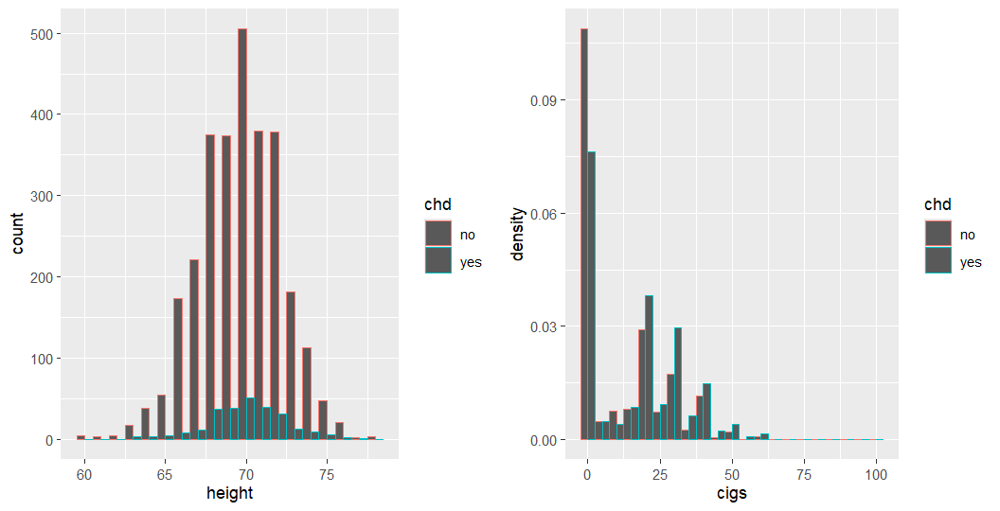
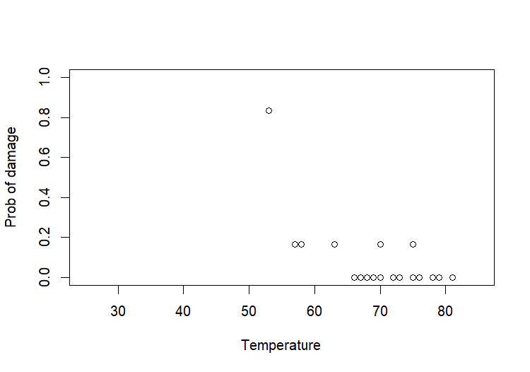

回归分析第12讲——基于R语言实现逻辑回归
这一讲为实践内容，我们将学习如何使用R语言建立和拟合逻辑回归模型，并对模型和参数进行假设检验。
本讲默认读者已经了解R语言的基本语法，能够在自己的电脑中成功编写和运行R脚本。
一、单个0-1响应的逻辑回归模型
1.1 数据集介绍与模型建立
我们先从最简单的情况开始。这里我们使用faraway包中的wcgs数据集，该数据集的收集过程是：在1960年挑选了约3000个年龄在39到59岁的健康男性作为受访者，随访调查八年半，其间记录每个人每天的抽烟量，最后检查他们是否患上了心脏病。
这个数据集涉及的变量很多，这里我们只看这几列：chd是二分变量，表示是否患病；height是身高（英寸），cigs是每日吸烟量（支）：
> data(wcgs, package = "faraway") |
我们进行简单的可视化，看看在患病和不患病的受试者中，身高和吸烟量的分布情况：
library(ggplot2) |

从左图中可以看到，患病与不患病人群在身高上的分布较为类似；从右图中可以看到，吸烟量的增加使得患病人数反超未患病人数。但是只从图上观察是不准确的，我们需要建立模型来确认患病与否跟身高、吸烟量的关系。
接下来我们开始建立逻辑回归模型。逻辑回归模型是广义线性回归模型，所以类似于线性回归模型的lm()语句，广义线性回归也有内置的glm()语句。由于我们要建立逻辑回归模型，响应变量是二分变量，所以只需额外指定family参数为binomial即可：
> lmod <- glm(chd ~ height + cigs, family = binomial, wcgs) |
如果你学习过之前的所有内容，那么这个输出就很容易看懂了。Coefficients部分给出了回归系数的估计值；Deviance值有两个，一个是零模型/最小模型的deviance，一个是残差/回归模型deviance；AIC是信息准则；最后给出了Fisher Scoring算法的迭代次数，通常是4~8次。
对于逻辑回归模型来说，只知道回归系数是不够的，不具有实际含义。由于回归系数代表了对的贡献，所以我们把回归系数转成几率来进行解读：
> (beta <- coef(lmod)) |
可以看到，身高和吸烟量的几率分别为1.026和1.0233，都是大于1的，所以如果两个系数的检验都通过的话，我们就可以说，身高增加1英寸，患病几率增加2.6%；或者每天多吸1支烟，患病几率增加2.3%。另外，如果每天吸了20支烟，患病优势增加59%。
1.2 模型的检验
拟合完一个模型之后，最重要的一件事就是做检验。我们首先考虑每一个回归系数的检验。
你可以看到输出结果中Coefficients部分有一个z value列，而在线性回归中这一列是t value。在理论部分我们推导过：
由于我们检验的目标是，所以进行标准化：
这就是z value列的由来，你仍然可以尝试把Estimate列和Std. Error列相除，就可以得到z value的结果。
为什么在逻辑回归中要使用z值（标准正态分布）而不是t值（t分布）？
这是因为，是确定的，无需估计的。
如果你还记得理论知识：，其中就是二项分布的方差，你就会发现方差是来自于结构（二项分布）而非样本，在大样本下，上述标准化就是服从正态分布的。
如果你回忆线性回归的回归系数的分布：，你就会发现是未知的，于是我们使用了来代替了，即用估计。既然我们对方差进行了估计，那么这种估计肯定是有误差的，这种误差会导致统计量存在拖尾的情况，因此使用t分布更为准确。
事实上，广义线性回归模型几乎都是使用z值来检验回归系数的。
接下来我们考虑模型的变量是否显著。我们之前学习的方法是，拟合不同的模型，然后调用anova()函数。这个方法在这里依然成立，你可以进行尝试，不过这里我们推荐一个更好的函数——drop1()，该函数可以自动地依次去掉一个自变量，然后与原模型做似然比检验，这样你就不需要手动搭建模型了：
> drop1(lmod, test="Chi") |
可以看到，当去掉cigs项时似然比检验显著，说明cigs确实是必不可少的项；而height在去掉前后对模型没有显著的影响，所以我们可以认为身高和患病之间不存在相关性。
最后提一下模型结构检验。在理论部分我们学过，要检验模型结构是否存在就可以使用Deviance检验，也就是分别求全模型和拟合模型的对数似然值，然后做似然比检验。但是，在R实践当中，你不能这样做，你不能真的这样写：
glm(chd ~ factor(1:n), family=binomial, data=wcgs) |
这样做是完全过拟合，往往不收敛甚至发生拟合错误。就算可以计算全模型的对数似然值，也无法直接检验，因为全模型的自由度为0。所以你会看到，summary(lmod)输出了Residual deviance: 1749.0 on 3151 degrees of freedom的字样，这里的Deviance值表示拟合模型和全模型的对数似然值的差，但是并不能做检验。
因此，一个更优的做法就是拟合最小模型/零模型，然后调用anova()函数：
> lmod_null <- glm(chd ~ 1, family=binomial, data=wcgs) |
p值显著，说明模型结构是显著的。
1.3 模型的诊断
1.2小节完成了显著性的检验，现在我们还需要进行模型的诊断。
首先是拟合优度检验。你会发现上面1.1小节中的summary(lmod)里没有输出决定系数，这是因为线性回归中的决定系数无法直接套用在逻辑回归中。在实际应用当中，我们一般使用HL检验和伪决定系数。
要实现HL检验，可以直接调用ResourceSelection包中的hoslem.test()函数：
#install.packages("ResourceSelection") |
我们把数据分成了10组，即g=10，结果是p值不显著，说明拟合优度偏差未达到显著性水平。
要计算伪决定系数，我们可以使用DescTools中的PseudoR2()函数来实现：
#install.packages("DescTools") |
这里展示了理论知识中提到的McFadden版本的伪决定系数，你还可以选择其他版本的伪决定系数，详情可以通过?PseudoR2来查询。
接下来看看残差。如果要获取每个样本的残差，可以使用residuals(lmod)。这里的残差默认是Deviance残差，如果你要使用Pearson残差，那就调用residuals(lmod, type="pearson")；如果你想调用的是观测值（0/1）和拟合值（）之间的“残差”，那就调用residuals(lmod, tupe="response")。获得残差以后，就可以做各种残差诊断，如正态性、等方差性、独立性等等，和线性回归没有区别。
这里还没提到过度分散问题，我们在第二节进行展开。
二、多个0-1响应的逻辑回归模型
上一节我们介绍了单个0-1响应的逻辑回归模型，接下来我们要拓展到多个0-1响应。多个0-1响应本质上就是理论学习部分的“分组处理”，即在某个水平下有多条数据，而不是以每条数据单独分组。这种处理类似于“批次”的概念，我们讨论的是每个批次的成功概率，而不是单个样本的成功与否。
2.1 数据集介绍与模型建立
1986年，航天飞机“挑战者号”在发射升空后爆炸。经过调查，工程师们把目光聚焦在火箭助推器的橡胶O型密封圈上。他们发现，在低温环境下，橡胶会变脆导致密封性变差。而在回顾之前已经完成的23次火箭发射任务，他们的确也发现了O型密封圈的损坏。那么是否可以把温度和密封圈的损坏联系起来呢？
faraway包中的orings数据集描述了每一个火箭的O型密封圈所处的温度和损坏的个数。每一个火箭有2个助推器，每个助推器有3个O型密封圈，也就是说，一个火箭有6个密封圈。damage列记录了每个火箭O型密封圈的损坏个数，temp列记录了温度。我们可以绘制O型密封圈损坏比例和温度的关系图：
> data(orings, package = "faraway") |

在这个数据中，我们讨论的是每个火箭的O型密封圈损坏的比例，而不是每个密封圈是否损坏；另外，处于同一个火箭的密封圈的温度应该是一致的，所以没必要重复地使用同一水平的自变量。因此，这里我们采取n次二项分布来描述响应变量的分布。
对于多个0-1响应的逻辑回归模型，在搭建模型的步骤方面和单个0-1响应的模型是一致的，但是存在一点不同：对于多个0-1响应来说，公式部分的y不能只放damage，而是应该放一个两列的矩阵，第1列是事件成功次数（这里是发生损坏的次数），第2列是事件失败次数（这里是6-损坏次数），这样才能正确建模：
> lmod <- glm(cbind(damage,6-damage) ~ temp, family = binomial, orings) |
后续的分析步骤就和第一节完全一样，这里不再赘述，下面我们着重探讨过度分散的问题。
2.2 过度分散及其解决
在理论知识部分我们提到，逻辑回归有可能会出现过度分散问题，也就是说观测值的方差大于模型估计方差，使得模型不能完全解释数据中的方差波动。解决方法是引入一个分散参数，使得。这个分散参数是可以手动估计的：
其中是模型拟合优度的Pearson卡方值。
在语言中，我们可以这样写：
sum(residuals(model, type="pearson")^2/(N-p)) |
上面是伪代码，在实际使用时需要替换model, N, p。如果你发现分散参数大于1，那说明模型存在过度分散问题。
我们使用2.1小节的例子，估计分散参数：
> sum(residuals(lmod, type = "pearson")^2/21) |
可以看到，上述搭建的模型是存在过度分散的。其实也不奇怪，从2.1小节的图中就可以看到，>0.5的数据和<0.5数据的量完全不对等。
要解决过度分散问题，我们可以使用拟二项分布（quasi-binomial）。要实现这一点很简单，只需要指定family参数为quasibinomial即可：
> lmod <- glm(cbind(damage,6-damage) ~ temp, family = quasibinomial, orings) |
拟二项分布不会改变参数估计的结果，但是会改变方差，从而对显著性p值进行了修正。
三、广义逻辑回归模型
最后我们介绍广义逻辑回归模型，这里我们只考虑模型建立的问题，后续的检验和诊断就不再反复赘述。
3.1 多分类无序逻辑回归模型
多分类无序逻辑回归是指，联系函数仍然为逻辑函数，但是响应变量服从多项分布，且类与类之间不存在先后关系。这类模型之所以是广义逻辑回归模型，是因为它仍然使用了逻辑函数，并且我们在建模时，选取某一类为参考类，剩下的每一类都分别与参考类构成二项分布的关系。
我们以Rosenstone发表的关于1996年美国大选研究的数据为例，展示多分类无序逻辑回归模型的建立过程。为了简化，我们只考虑受访者的年龄、教育水平、经济收入水平，并探讨这些变量和他们加入的党派之间的关系。我们只考虑三类党派：民主党（Democrat）、独立派（Independent）、共和党（Republican），因此我们需要进行一定的数据重排：
> data(nes96, package = "faraway") |
接下来我们来建立模型。要建立多分类无序逻辑回归，我们可以使用nnet包中的multinom()函数。nnet包是一个神经网络包，但是我们只需要使用神经网络训练器里面的优化方法来计算极大似然估计，不涉及到更深的网络。这样做的原因是，用这个优化方法会更快：
> library(nnet) |
这种方法训练速度很快。我们通过step()进行了简单的筛选，最终只保留了income这个变量。
或者，如果你想要类似于glm()的写法，一个更通用的包是VGAM，使用其中的vglm()函数，指定family=multinomial即可：
#install.packages("VGAM") |
3.2 多分类有序逻辑回归模型
如果响应变量不仅服从多项分布，每个类别之间还有顺序关系，那么我们就需要使用多分类有序逻辑回归模型了。在理论部分我们提到，多分类有序逻辑回归模型大致有三类：
- 比例几率模型（Proportional Odds Model, PO）
- 相邻类别模型（Adjacent Categories Model, AC）
- 连续比例模型（Continuation Ratio Model, CR）
在实际情况下，我们需要根据研究内容的特点来选择合适的模型。这里我们以PO模型为例。
我们仍然以3.1小节中构造的数据集为例，我们假设三个党派是有顺序关系的（虽然事实上并没有，这里只是为了简便），例如，我们假设独立派在民主党与共和党之间。要建立PO模型，我们使用MASS包中的polr()函数来完成：
> library(MASS) |
如果你对模型使用step()，你会发现还是只跟income有关。
当然，VGAM包更全面，你仍然只需要使用vglm()函数，并且指定family = cumulative(link="logit")即可。另外，对于AC模型，可以参考VGAM包中的acat()；对于CR模型，可以参考VGAM包中的cratio()。所以说，VGAM包算是更为通用的包。
3.3 二项响应的不同联系函数
最后我们来看二项响应的不同联系函数。虽然使用别的联系函数已经不能称之为”逻辑回归“了，但是为了完整性，我们还是要介绍如何使用其他联系函数。不过请注意，这里所谓的”其他联系函数“要和响应变量的二项分布相适应，不是随便用一个联系函数就可以。
如果响应变量服从二项分布，那么除了逻辑函数，还有常见的比如Probit模型（标准正态分布连接）、log-log模型（两层对数连接）、cauchit模型（Cauchy分布连接）等。在glm()的family参数处，binomial默认是logit连接，也就是逻辑回归。要使用其他联系函数只需要在这个基础上进行修改即可。
我们以bliss数据集为例，该数据集记录了不同杀虫剂浓度对昆虫死亡比例的影响：
> data(bliss, package = "faraway") |
> mlogit <- glm(cbind(dead,alive)~conc, family=binomial, data=bliss) |
我们来对比一下四个模型的拟合值：
> predval <- sapply(list(mlogit,mprobit,mcloglog,mcauchit), fitted) |
看起来它们的区别是有但不多的。如何选择这几个联系函数不能单单靠数据本身，有时候还需要实际经验、领域知识以及便利性。比如在生物医学和临床队列方面，可能就用逻辑回归模型是最佳的，因为它数学表达简单、容易解释OR值、适合前瞻性和回顾性研究；对于一些金融、博弈方面的模型，或许用probit或log-log模型更好。